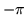

<!DOCTYPE HTML PUBLIC "-//W3C//DTD HTML 3.2 Final//EN">
<!-- Converted with jLaTeX2HTML 98.1p1 release (March 2nd, 1998) + JP patch 2.0 (March 16th, 1998)
patched by Kenshi Muto (mutou@three-a.co.jp), Three-A Systems,Co.,Ltd.
LaTeX2HTML 98.1p1 release (March 2nd, 1998)
originally by Nikos Drakos (nikos@cbl.leeds.ac.uk), CBLU, University of Leeds
* revised and updated by:  Marcus Hennecke, Ross Moore, Herb Swan
* with significant contributions from:
  Jens Lippmann, Marek Rouchal, Martin Wilck and others  -->
<HTML>
<HEAD>
<TITLE>arg</TITLE>
<META NAME="description" CONTENT="arg">
<META NAME="keywords" CONTENT="REFS">
<META NAME="resource-type" CONTENT="document">
<META NAME="distribution" CONTENT="global">
<META HTTP-EQUIV="Content-Type" CONTENT="text/html; charset=iso-2022-jp">
<LINK REL="STYLESHEET" HREF="REFS.css">
<LINK REL="next" HREF="node16.htm">
<LINK REL="previous" HREF="node14.htm">
<LINK REL="up" HREF="node4.htm">
<LINK REL="next" HREF="node16.htm">
</HEAD>
<BODY BGCOLOR=NavajoWhite>
<!-- Navigation Panel -->
<A NAME="tex2html934"
 HREF="node16.htm">
</A> 
<A NAME="tex2html931"
 HREF="node4.htm">
</A> 
<A NAME="tex2html925"
 HREF="node14.htm">
</A> 
<A NAME="tex2html933"
 HREF="node1.htm">
</A>  
<BR>
<STRONG> Next:</STRONG> <A NAME="tex2html935"
 HREF="node16.htm">asin</A>
<STRONG> Up:</STRONG> <A NAME="tex2html932"
 HREF="node4.htm">$B%j%U%!%l%s%9%^%K%e%"%k(J</A>
<STRONG> Previous:</STRONG> <A NAME="tex2html926"
 HREF="node14.htm">any_row</A>
<BR>
<BR>
<!-- End of Navigation Panel -->

<H2><A NAME="SECTION000411000000000000000">&#160;</A><A NAME="man_arg">&#160;</A>
<BR>
arg
</H2><FONT SIZE="-1"><FONT SIZE="-1"><FONT SIZE="-1"><FONT SIZE="-1"><FONT SIZE="-1"><FONT SIZE="-1"></FONT></FONT></FONT></FONT></FONT></FONT><DL COMPACT>

<DT>$B!ZL\E*![(J
<DD>arg - $BJ#AG?t$NJP3Q(J
<DT>$B!Z7A<0![(J
<DD><PRE>
p = arg(z)        P = arg(X)
   Real p;           (Matrix|Array) P;
   Complex z;        (CoMatrix|CoArray) X;
</PRE><FONT SIZE="-1"><DT>$B!Z>\:Y![(J
<DD>arg(z)$B$O!$J#AG?t(J z $B$NJP3Q$r%i%8%"%s$G5a$a$k!#JP3Q$NHO0O$O(J
</FONT><FONT SIZE="-1"> $B$+$i(J </FONT><FONT SIZE="-1"> $B$G$"$k!#(J
arg(X)$B$O!$J#AG(J($B9TNs(J|$BG[Ns(J) X $B$N3F@.J,$NJP3Q$+$i$J$k(J($B9TNs(J|$BG[Ns(J) P 
$B$r5a$a$k!#(JP $B$NBg$-$5$O(J X $B$NBg$-$5$HF1$8!#(J
$BJ#AG?t(J z = (x,y) = r*exp(i*theta)$B$NBg$-$5$HJP3Q$O(J
r = abs(z)$B!$(Jtheta = arg(z)$B$GM?$($i$l$k!#(J
<DT>$B!Z;;K!![(J
<DD>arg $B$O<!$N$h$&$KI=$;$k!#(J
arg(z) = Im(log(z)) = atan2(Im(z), Re(z))
<DT>$B!ZNcBj![(J
<DD></FONT><PRE>
&gt;&gt; p = arg((1,1))
p = 0.7585398
</PRE><FONT SIZE="-1"><FONT SIZE="-1"><DT>$B!Z;2>H![(J
<DD></FONT></FONT>
<DIV><TT>atan2(<A HREF="node19.htm#man_atan2">2.15</A>)
<BR></TT></DIV><FONT SIZE="-1"><FONT SIZE="-1"><FONT SIZE="-1"></DL><FONT SIZE="-1"><FONT SIZE="-1"><FONT SIZE="-1"></FONT></FONT></FONT></FONT></FONT></FONT>
<BR><HR>
<ADDRESS>
Masanobu KOGA
$BJ?@.(J11$BG/(J10$B7n(J2$BF|(J
</ADDRESS>
</BODY>
</HTML>
